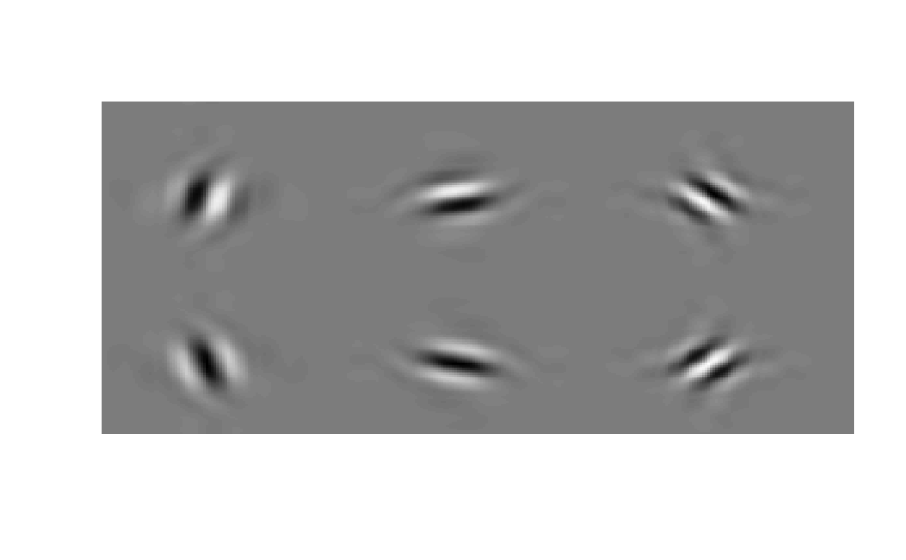

Dualtree.RdOne- and two-dimensional dual-tree complex discrete wavelet transforms developed by Kingsbury and Selesnick et al.
dualtree(x, J, Faf, af)
idualtree(w, J, Fsf, sf)
dualtree2D(x, J, Faf, af)
idualtree2D(w, J, Fsf, sf)| x | \(N\)-point vector or \(M{\times}N\) matrix. |
|---|---|
| w | DWT coefficients. |
| J | number of stages. |
| Faf | analysis filters for the first stage. |
| af | analysis filters for the remaining stages. |
| Fsf | synthesis filters for the last stage. |
| sf | synthesis filters for the preceeding stages. |
For the analysis of x, the output is
DWT coefficients. Each wavelet scale is a list containing the real and imaginary parts. The final scale (\(J+1\)) contains the low-pass filter coefficients.
output signal
In one dimension \(N\) is divisible by \(2^J\) and \(N\ge2^{J-1}\cdot\mbox{length}(\mbox{\code{af}})\).
In two dimensions, these two conditions must hold for both \(M\) and \(N\).
WAVELET SOFTWARE AT POLYTECHNIC UNIVERSITY, BROOKLYN, NY
http://taco.poly.edu/WaveletSoftware/
Matlab: S. Cai, K. Li and I. Selesnick; R port: B. Whitcher
## EXAMPLE: dualtree
x = rnorm(512)
J = 4
Faf = FSfarras()$af
Fsf = FSfarras()$sf
af = dualfilt1()$af
sf = dualfilt1()$sf
w = dualtree(x, J, Faf, af)
y = idualtree(w, J, Fsf, sf)
err = x - y
max(abs(err))
#> [1] 1.895423e-08
## Example: dualtree2D
x = matrix(rnorm(64*64), 64, 64)
J = 3
Faf = FSfarras()$af
Fsf = FSfarras()$sf
af = dualfilt1()$af
sf = dualfilt1()$sf
w = dualtree2D(x, J, Faf, af)
y = idualtree2D(w, J, Fsf, sf)
err = x - y
max(abs(err))
#> [1] 1.930035e-08
## Display 2D wavelets of dualtree2D.m
J <- 4
L <- 3 * 2^(J+1)
N <- L / 2^J
Faf <- FSfarras()$af
Fsf <- FSfarras()$sf
af <- dualfilt1()$af
sf <- dualfilt1()$sf
x <- matrix(0, 2*L, 3*L)
w <- dualtree2D(x, J, Faf, af)
w[[J]][[1]][[1]][N/2, N/2+0*N] <- 1
w[[J]][[1]][[2]][N/2, N/2+1*N] <- 1
w[[J]][[1]][[3]][N/2, N/2+2*N] <- 1
w[[J]][[2]][[1]][N/2+N, N/2+0*N] <- 1
w[[J]][[2]][[2]][N/2+N, N/2+1*N] <- 1
w[[J]][[2]][[3]][N/2+N, N/2+2*N] <- 1
y <- idualtree2D(w, J, Fsf, sf)
image(t(y), col=grey(0:64/64), axes=FALSE)
